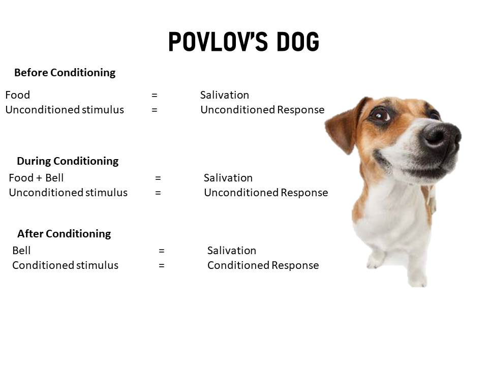

Learning
Learning is any permanent change in behaviour of a person that occurs as result of experience. It is accompained by acquisition of knowledge, skills and expertise which are permanent.
Learning can be defined as the permanent change in behaviour due to direct and indirect 0exerience. It means change in behaviour, attitude due to education and training, practice and experience.
| Table Of Content |
|---|
Feature of Learning
- Learning involves change in behaviour of a person : The change may be good or bad from organisation point of view. Example: bad habits, prejudice, etc may be learnt by an individual.
- Change in behaviour must be relatively permanent : To constitute learning, change should be relatively permanent. Temparary change may be only reflective and fail to represent any learning.
- The change in behaviour should occur as a result of experience , practice or training: It implies that behaviour caused from maturity disease, or physical damage does not constitute learning.
- The Practice or experience must be reinforced in order for learning to occur : If reinforced does not accompany the practice or experience, the behaviour with eventually disappear.
- Learning in reflected in behaviour : A change in an individual's thought process or attitude , not accompanied by behaviour, is no learning.
Characteristics of Learning
- Learning in growth : Learning is a process that constantly enlarges individual's understanding of his environment and thus the growth.
- Learning is adjustment : Learning teaches adjustment. The individual must learn to adjust himself to the changes that take place about him.
- Learning involves acquisition of knowledge and skills : Leaning gives insight into how best to develope the talents and skiulls that employees need to perform effectively.
- Learning is organizing experience : Learning involves repeated experiences, each modifying the learner's attitude, ideals, knowledge skills and habits.
- Leaning is process of conditioning : Conditioning is often used as a synonym for learning. More precisely condioning refers to the process of acquiring a particular pattern of behaviour.
- Learning involves change : Learning involves long term change in behaviour potential. This change in behaviour of a person is through education, practice, experience and training.
- Learning is continuous : Learning is a continuous process as it affect all modes of behaviour and continues throughout the life cycle.
- Learning is transferable : Learning can be transfered from one person to another through sharing experience, beliefs,values etc.
Theories of Learning
There are 4 theories which explain how individual learns new pattern of behaviour
Classical Conditioning (Ivan Pavlov)
- Classical conditioning deals with the association of one event with another desired event resulting in an desired behaviour or learning.
- Classical conditioning was given by Ivan Pavlov, a famed nobel prize winning physiologist.
- Pavlov conducted an experiment on a dog to study the relation between the dog's salivation and ringing of a bell .when he presented a piece of meat to the dog, he noticed a great deal of salivation. He called the food as unconditioned response. During the second stage, he merely rang the bell, but the dog did not salivate in response to rining of the sound of the bell. He subsequently into duced the sound of the bell each time the meat was given to the dog. Thus, eventualy the dog learnt to salivate in response to the ringing of the bell even when there was no meat. This how pavlov conditioned the dog to responsed to a learned stimulus. 
-
Operant Conditioning (B.F. Skinner)
- Operant conditioning is based on the work of B.F.Skinner. It is based on the premise that behaviour is a function of its consequences.
- Individuals emit responses that are either not reward or are punised. Behaviour is likely to be repeated if the responses are favourable and it is not likely to be repeated if the consequence are unfavourable.
Cognitive Learning
- Cognition refers to an individual ideas, thoughts, knowledge, understanding,etc about himself and his environment.
- The theory state that when people observe a model performing a behaviour, they remender the sequence of event and use this information to guide subsequent behaviours.
-
Social Learning
- Social learning theory is extension of operant conditioning.
- The view that we can learn through both observation and direct experience is called social learning.
In Pavolv's pioneering study, dogs learned that a stimulus(in this case, a bell) meant they were about to be fed. Starting with two things that are naturally paired salivating and being fed. Pavlov then added a third component by ringing a bell before feeding.
After a few trails, the dogs learned to associated the bell (stimulus) with being fed and would react by salivating (conditioned response) at the sound of the bell in anticipation of their food but without any present.
Process of Learning
- Motive : Also called drives which forces people to take action. Largely subjective and mental feeling of the people.
- Stimuli : Are the object in the environment in which a person live are of two types :
- Generalisation : Takes pakce when the similar newe stimuli repeat in the environment. If the two stimuli are exactly same then same probability of specific response.
- Discrimination : Opposite to generalisation process where by an organisation learn to emit a response to a stimuli be avoids making the same response.
- Response : The stimulus result in response may be in the physical form or may be in terms of attitude familiarity perception.
- Reinforcement : Repition of behaviour fundamental condition of learning.
- Retention : Rememberance of learned behaviour over time. learning which is forgotten is extination.